Core · Video walkthrough
Core: location sources, freshness, and response estimates
Review stored department and station locations, map filters, marker context, location age and response estimates in actual Core screens.
Before you begin
- Use the isolated fictional Firehouse51 training department and an already authorized Core administrator session.
- Keep original calls, shared settings, Engine51 station/crew and member qualifications unchanged. This lesson reads the retained states.
- Understand that native device tracking, provider delivery and wider saved reference-data workflows require separate evidence.
Chapters
- Read the map as evidence
- Review the department address and default center
- Separate a station position from its response boundary
- Filter the map without changing resources
- Read icon conventions and incident context
- Separate map update time from status time
- Recognize a station-origin estimate
- Recognize stale and simulated position data
- Review minute-based map TTL and status overwrite
- Review dispatch age and response limits in seconds
- Read ETA and turnout as estimates
- Carry reference-location work forward honestly
Watch the walkthrough
Step 1
Read the map as evidence
On Mapping, read the warehouse call label and open description before interpreting the marker. That popup identifies a fictional incident; it does not establish where a person or apparatus is now. This walkthrough reviews Core administration and recorded training data. Device permissions and field tracking need their own application checks. Keep that distinction visible when using location information for fire and EMS, community response, or industrial standby.

Practice
Identify the fictional incident separately from a person, unit or fixed station; describe which source you would need for a current resource position.
Step 2
Review the department address and default center
In Department Settings, review Address and Default Map Center GPS Coordinates. The paired latitude and longitude inputs describe the starting map view, not a live vehicle fix. This example uses a fictional Chicago address and explicit decimal coordinates. Check Street, City, State/Province, Zip/Postal Code and Country before relying on the extent. Save and Cancel are visible; this demonstration reads existing values and leaves the department unchanged.
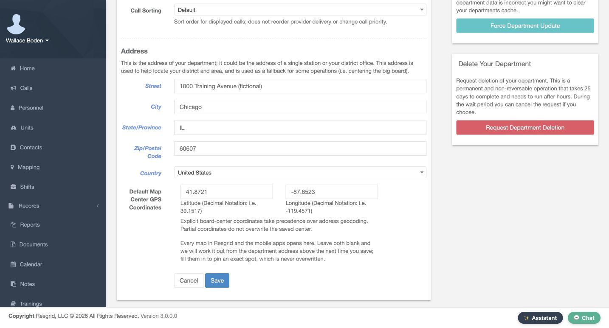
Practice
Read the actual configured center without changing shared settings; identify who owns corrections to the department address.
Step 3
Separate a station position from its response boundary
On Edit Group, confirm Station Group and Group Name before reading Station Address. Firehouse 51 has a fictional Chicago address and Gps Coordinates; the lower what3words Address field is empty. These are alternative station-location inputs, not a live fix. Group Boundary is a separate response or service area. This demonstration reads the existing fields and preserves the station, boundary, apparatus assignment and crew.
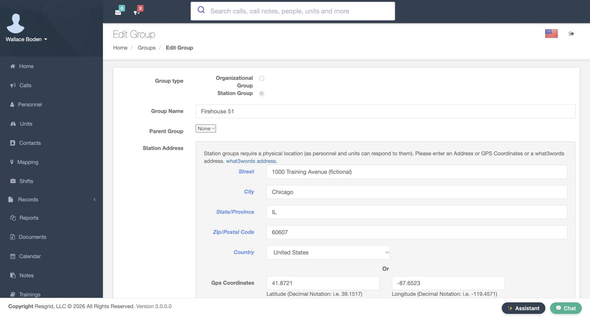
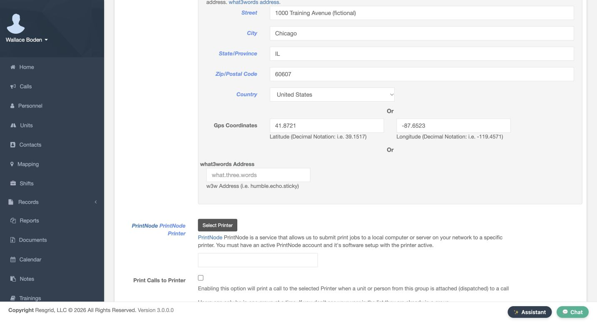

Practice
Compare the stored station point with a response boundary without drawing, saving or changing the shared training group.
Step 4
Filter the map without changing resources
On Mapping, use Filter marker text to focus the display. The retained Truck 81 view leaves that named marker visible. Show calls, Show stations, Show units, Show personnel and Show POIs control displayed categories. In the comparison view, the text filter is empty and Show units is unchecked. A hidden category is not a released resource or deleted position. Inspect these controls before treating an expected resource as missing.
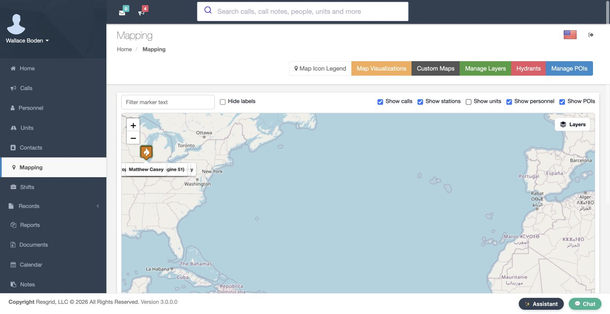
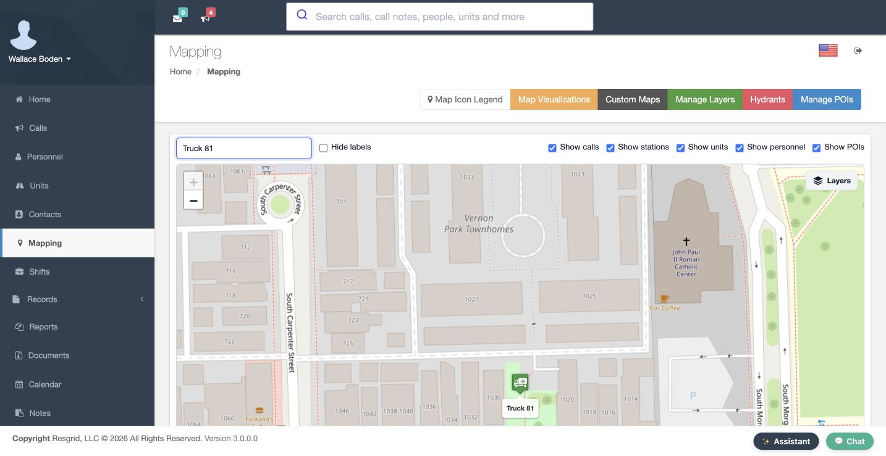
Practice
Explain why an omitted unit could be a view filter, then verify the intended filter/category state through the actual controls.
Step 5
Read icon conventions and incident context
From Mapping, Map Icon Legend explains type and priority conventions. Routine, Urgent and Emergency appear in separate columns. On Edit Call Type, the Structure Fire Preview shows a stored custom icon and says Showing the current custom icon. The warehouse popup supplies the incident description. These are visual identifiers. They do not establish a fresh position, response acceptance or notification receipt. Read the label and context rather than relying only on a flame or vehicle picture.
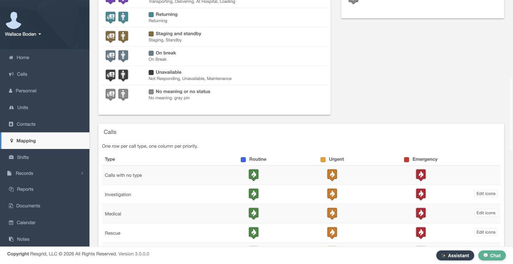


Practice
Compare an incident type/priority convention with its actual label and avoid treating a custom icon as a live-status measurement.
Step 6
Separate map update time from status time
On Mapping, the footer says Last update. It records when the client loaded or refreshed marker data, or handled a location update; it is not every resource’s fix time. In Units, Status and Timestamp belong to the latest unit status. That time is not a GPS measurement either. These screens show historical training states. Check the appropriate position source and age before treating a page refresh or status entry as evidence that an apparatus moved.

Practice
Distinguish the page-update footer, unit-status time and actual position time. Do not describe the historical Released row as current Engine51 state.
Step 7
Recognize a station-origin estimate
In the recorded New Call position popup, Engine 51 explicitly says Station location and shows station coordinates beside the call location. That comparison uses a stored origin. A unit in quarters, or one without an available live position, can be measured from its station under the response-origin rules. Read the source before using the estimate. The displayed distance and time do not prove physical presence, arrival, or an active navigation route.

Practice
Read the recorded station origin and turnout-inclusive estimate. Explain why it is no proof of present station occupancy, physical movement or arrival.
Step 8
Recognize stale and simulated position data
On New Call, compare the Personnel rows. One historical training view shows Live GPS with a stale badge; the separately simulated newer view omits that badge. Live GPS names the application’s data-source category. No real device permission or physical movement was exercised. Status, Staffing, ETA and Position are separate columns. Treat No position as missing information, and review the source and configuration before using the first ranked candidate as an operational recommendation.

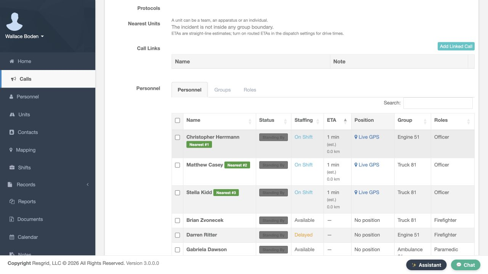
Practice
Compare the two fictional fixture states without claiming continuous live tracking. Identify which exact fix timestamp or numeric age would still need a dedicated readable detail shot.
Step 9
Review minute-based map TTL and status overwrite
In Mapping and BigBoard Settings, review personnel and unit controls separately. TTL In Minutes for Personnel Locations and TTL In Minutes for Unit Locations both show zero in these views. Zero disables ping expiry; the help text’s sixty-minute example is not a saved sixty. A location-bearing status can remain a fallback after a ping expires. The separate no-location-status checkboxes affect replacement behavior. Check the policy and position source before promising that a marker will disappear.
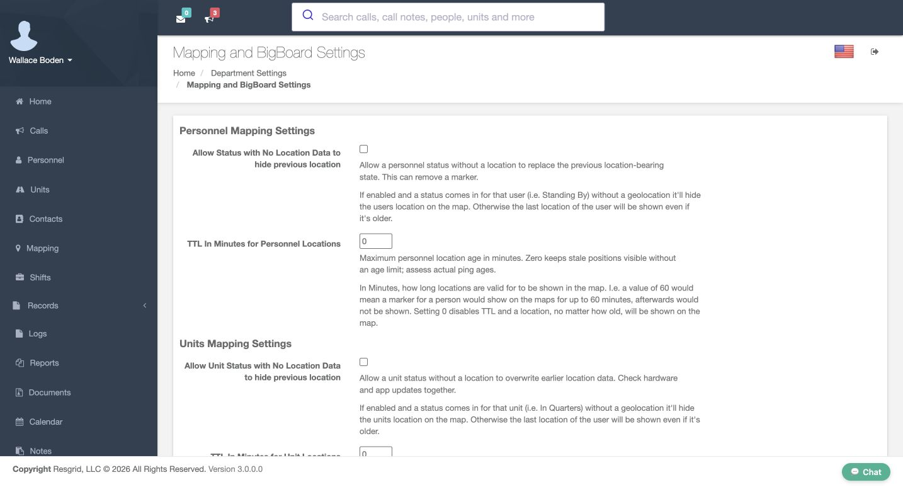
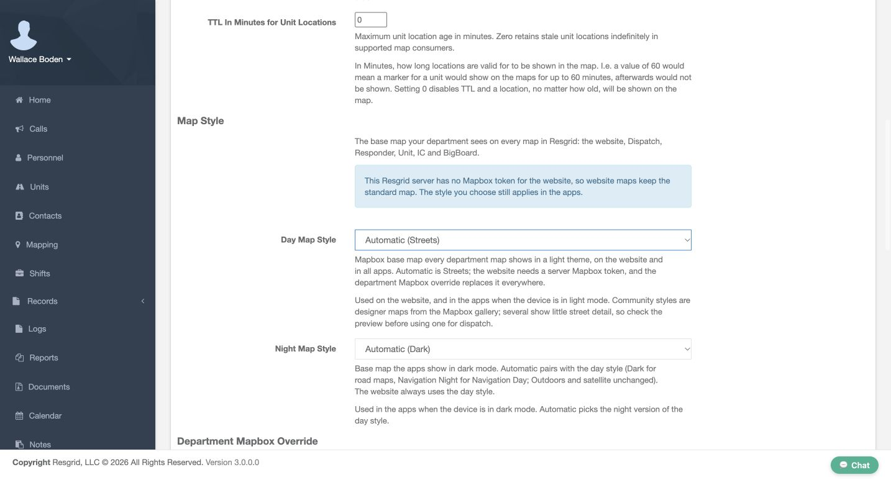
Practice
Read both actual zero inputs and the distinct overwrite checkboxes without saving. Keep the hypothetical60-minute help example separate from the recorded value and status fallback.
Step 10
Review dispatch age and response limits in seconds
In dispatch settings, Closest Unit Response Tuning has separate age controls. Maximum unit location age and Maximum personnel location age are in seconds; both recorded values are eighteen hundred. They differ from map TTL measured in minutes. Include stale locations is unchecked. Maximum response radius is zero, meaning no configured maximum radius. These controls influence candidate evaluation. They do not certify a fresh fix, prove service-area coverage, or change a resource position because the map refreshed.

Practice
Compare units and meaning: map TTL minutes versus dispatch maximum-age seconds. Read the captured values and leave shared dispatch policy unchanged.
Step 11
Read ETA and turnout as estimates
In the same Closest Unit Response Tuning section, Order by driving ETA is unchecked and ETA shortlist size is five. Turnout is one hundred twenty seconds in quarters, zero mobile and zero personnel. The matching Engine 51 station popup shows a two-minute estimate including one hundred twenty seconds of turnout. Response combines applicable turnout with estimated travel. Routed drive time is separate. This is no tested drive, confirmed dispatch receipt, physical movement or arrival commitment.

Practice
Compare actual120/0/0turnout settings with the matching2-minute/120-second station popup. Leave routed ETA/provider controls unchanged.
Step 12
Carry reference-location work forward honestly
From Mapping, Manage POIs opens the empty POI-type list. In Weather Alerts, Monitoring Zones offers Center Location, Radius in miles and Save Zone; no zone is saved here. Hospitals, layers, floor plans and patrol routes still require their own saved-workflow checks. For search and rescue, security, wildland or community teams, apply the same source-and-age checks before operational use. Keep missing reference data on the follow-up list until its placement and limits are actually reviewed.
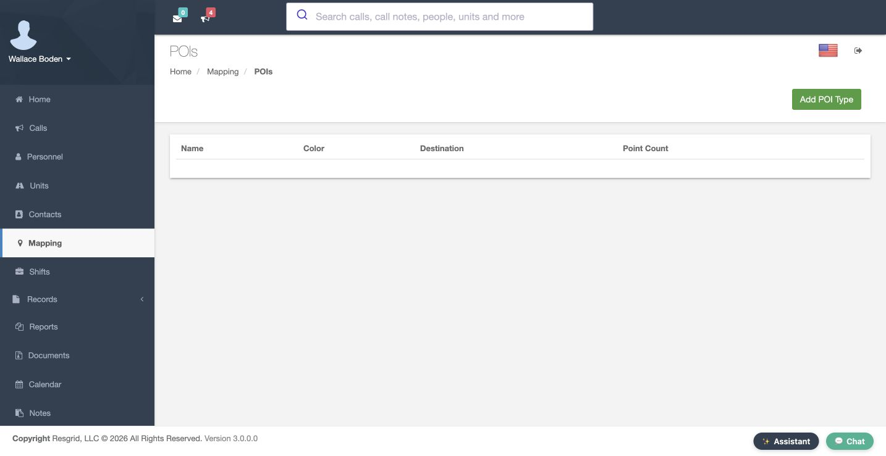
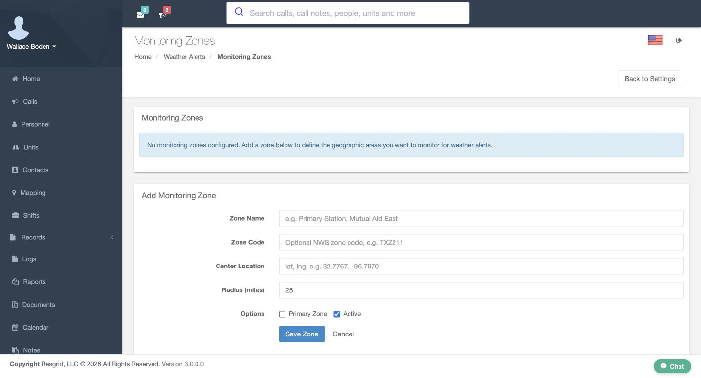
Practice
Choose one fictional reference-data gap for a separate actual-screen workflow. Do not claim a saved point, drawn weather audience, uploaded floor plan, route execution or alert delivery from these empty forms.
Examples for your department
- Fire / EMS
- An ambulance crew is selected near a training hospital.
- Community response
- A mobile crisis team coordinates a shared community support vehicle.
- Search and rescue
- A search team stages at a trailhead.
- Security
- A patrol unit starts a campus round.
- Wildland
- A mutual-aid engine moves between bases.
- Industrial
- An industrial team investigates a fictional warehouse alarm.
Transcript
Download transcriptRead the complete transcript
Core: location sources, freshness, and response estimates Audience: Department administrators and dispatchers reviewing the fictional training department. Read the map as evidence On Mapping, read the warehouse call label and open description before interpreting the marker. That popup identifies a fictional incident; it does not establish where a person or apparatus is now. This walkthrough reviews Core administration and recorded training data. Device permissions and field tracking need their own application checks. Keep that distinction visible when using location information for fire and EMS, community response, or industrial standby. Practice: Identify the fictional incident separately from a person, unit or fixed station; describe which source you would need for a current resource position. Review the department address and default center In Department Settings, review Address and Default Map Center GPS Coordinates. The paired latitude and longitude inputs describe the starting map view, not a live vehicle fix. This example uses a fictional Chicago address and explicit decimal coordinates. Check Street, City, State/Province, Zip/Postal Code and Country before relying on the extent. Save and Cancel are visible; this demonstration reads existing values and leaves the department unchanged. Practice: Read the actual configured center without changing shared settings; identify who owns corrections to the department address. Separate a station position from its response boundary On Edit Group, confirm Station Group and Group Name before reading Station Address. Firehouse 51 has a fictional Chicago address and Gps Coordinates; the lower what3words Address field is empty. These are alternative station-location inputs, not a live fix. Group Boundary is a separate response or service area. This demonstration reads the existing fields and preserves the station, boundary, apparatus assignment and crew. Practice: Compare the stored station point with a response boundary without drawing, saving or changing the shared training group. Filter the map without changing resources On Mapping, use Filter marker text to focus the display. The retained Truck 81 view leaves that named marker visible. Show calls, Show stations, Show units, Show personnel and Show POIs control displayed categories. In the comparison view, the text filter is empty and Show units is unchecked. A hidden category is not a released resource or deleted position. Inspect these controls before treating an expected resource as missing. Practice: Explain why an omitted unit could be a view filter, then verify the intended filter/category state through the actual controls. Read icon conventions and incident context From Mapping, Map Icon Legend explains type and priority conventions. Routine, Urgent and Emergency appear in separate columns. On Edit Call Type, the Structure Fire Preview shows a stored custom icon and says Showing the current custom icon. The warehouse popup supplies the incident description. These are visual identifiers. They do not establish a fresh position, response acceptance or notification receipt. Read the label and context rather than relying only on a flame or vehicle picture. Practice: Compare an incident type/priority convention with its actual label and avoid treating a custom icon as a live-status measurement. Separate map update time from status time On Mapping, the footer says Last update. It records when the client loaded or refreshed marker data, or handled a location update; it is not every resource’s fix time. In Units, Status and Timestamp belong to the latest unit status. That time is not a GPS measurement either. These screens show historical training states. Check the appropriate position source and age before treating a page refresh or status entry as evidence that an apparatus moved. Practice: Distinguish the page-update footer, unit-status time and actual position time. Do not describe the historical Released row as current Engine51 state. Recognize a station-origin estimate In the recorded New Call position popup, Engine 51 explicitly says Station location and shows station coordinates beside the call location. That comparison uses a stored origin. A unit in quarters, or one without an available live position, can be measured from its station under the response-origin rules. Read the source before using the estimate. The displayed distance and time do not prove physical presence, arrival, or an active navigation route. Practice: Read the recorded station origin and turnout-inclusive estimate. Explain why it is no proof of present station occupancy, physical movement or arrival. Recognize stale and simulated position data On New Call, compare the Personnel rows. One historical training view shows Live GPS with a stale badge; the separately simulated newer view omits that badge. Live GPS names the application’s data-source category. No real device permission or physical movement was exercised. Status, Staffing, ETA and Position are separate columns. Treat No position as missing information, and review the source and configuration before using the first ranked candidate as an operational recommendation. Practice: Compare the two fictional fixture states without claiming continuous live tracking. Identify which exact fix timestamp or numeric age would still need a dedicated readable detail shot. Review minute-based map TTL and status overwrite In Mapping and BigBoard Settings, review personnel and unit controls separately. TTL In Minutes for Personnel Locations and TTL In Minutes for Unit Locations both show zero in these views. Zero disables ping expiry; the help text’s sixty-minute example is not a saved sixty. A location-bearing status can remain a fallback after a ping expires. The separate no-location-status checkboxes affect replacement behavior. Check the policy and position source before promising that a marker will disappear. Practice: Read both actual zero inputs and the distinct overwrite checkboxes without saving. Keep the hypothetical60-minute help example separate from the recorded value and status fallback. Review dispatch age and response limits in seconds In dispatch settings, Closest Unit Response Tuning has separate age controls. Maximum unit location age and Maximum personnel location age are in seconds; both recorded values are eighteen hundred. They differ from map TTL measured in minutes. Include stale locations is unchecked. Maximum response radius is zero, meaning no configured maximum radius. These controls influence candidate evaluation. They do not certify a fresh fix, prove service-area coverage, or change a resource position because the map refreshed. Practice: Compare units and meaning: map TTL minutes versus dispatch maximum-age seconds. Read the captured values and leave shared dispatch policy unchanged. Read ETA and turnout as estimates In the same Closest Unit Response Tuning section, Order by driving ETA is unchecked and ETA shortlist size is five. Turnout is one hundred twenty seconds in quarters, zero mobile and zero personnel. The matching Engine 51 station popup shows a two-minute estimate including one hundred twenty seconds of turnout. Response combines applicable turnout with estimated travel. Routed drive time is separate. This is no tested drive, confirmed dispatch receipt, physical movement or arrival commitment. Practice: Compare actual120/0/0turnout settings with the matching2-minute/120-second station popup. Leave routed ETA/provider controls unchanged. Carry reference-location work forward honestly From Mapping, Manage POIs opens the empty POI-type list. In Weather Alerts, Monitoring Zones offers Center Location, Radius in miles and Save Zone; no zone is saved here. Hospitals, layers, floor plans and patrol routes still require their own saved-workflow checks. For search and rescue, security, wildland or community teams, apply the same source-and-age checks before operational use. Keep missing reference data on the follow-up list until its placement and limits are actually reviewed. Practice: Choose one fictional reference-data gap for a separate actual-screen workflow. Do not claim a saved point, drawn weather audience, uploaded floor plan, route execution or alert delivery from these empty forms. Examples for your department Fire / EMS: An ambulance crew is selected near a training hospital. Community response: A mobile crisis team coordinates a shared community support vehicle. Search and rescue: A search team stages at a trailhead. Security: A patrol unit starts a campus round. Wildland: A mutual-aid engine moves between bases. Industrial: An industrial team investigates a fictional warehouse alarm.